Capítulo 2
Agentes Químicos presentes na construção Civil
Que elementos químicos podem estar associados a construção Civil? Você conhece quais são os elementos e de que forma eles se transformam em substâncias?
CONTEXTUALIZANDOA construção civil é o setor que apresenta um número diversificado de atividades. As ramificações do setor vão desde pequenas construções até obras de grandes proporções, dividindo-se em obras de edificações, saneamento básico, construção de estradas, barragens, túneis, enfim. Estas atividades diversificadas podem conter agentes químicos que por vezes são causadores de doenças ocupacionais. O contato destes agentes químicos surge durante o processo da realização das atividades dentro do canteiro de obras, como a poeira, por exemplo, que é o principal agente químico identificado dentro de um canteiro de obras. Essa poeira contendo sílica, (quartzo) é o principal constituinte da areia, e, por essa razão. Para evitarmos qualquer tipo de problema ocupacional, precisamos seguir as instruções sobre os usos dos equipamentos e proteção individual, além de conhecermos os elementos e substâncias presentes nas atividades da construção civil. 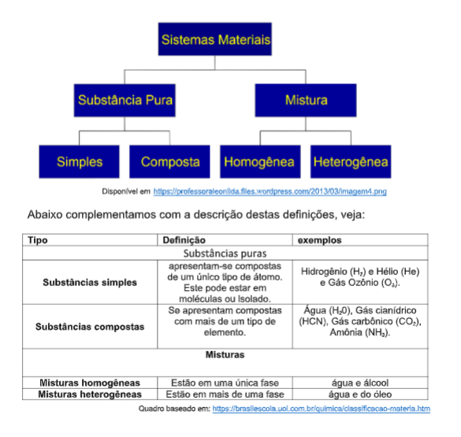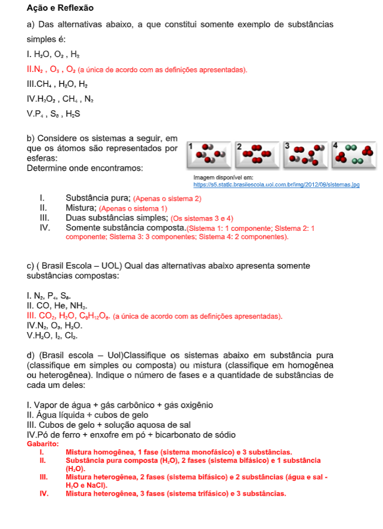
(Re)construindo conceitosA formação de substância são os tipos de ligações que ocorrem entre os átomos, neste contexto as chamaremos de ligações Químicas são dos tipos: Iônicas, Covalentes e metálicas. Quando outro átomo se aproxima de outro, estes elétrons passam a sofrer a influência de outro núcleo e de outros elétrons. Estudaremos as ligações iônicas e as propriedades dos seus compostos, neste capítulo. Basearemos nossas atividades em questionamentos.
1ª Como se formam as substâncias químicas com ligações iônicas?Para compreendermos a formação das substâncias se faz necessário conhecermos a tabela periódica. Esta surgiu para agrupar os elementos que têm propriedades químicas e físicas semelhantes, ou seja, apresenta a organização por regiões dos metais, semimetais, não metais e gases nobres, divididos de forma a facilitar sua localização. Desta forma em um único quadro é possível identificar os elementos químicos organizados em ordem de número atômico, agrupados cada qual em um bloco próprio, e ainda classifica todos eles por famílias. Atualmente foram descobertos 109 elementos que são representados por símbolos. Há vários símbolos e números que caracterizam as diferenças nos elementos. Assim ao observarmos a posição do elemento é possível identificar a família ou grupo que representa as características químicas e o período que corresponde ao tamanho do átomo conforme as camadas ocupadas por elétrons na eletrosfera. Veja algumas representações de átomos na imagem ao lado. 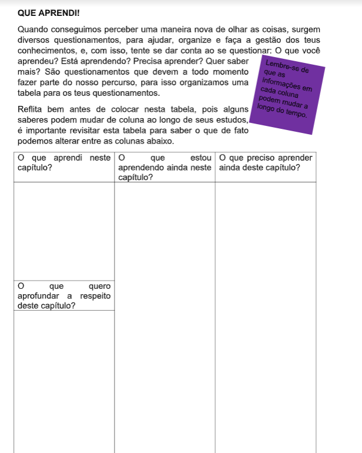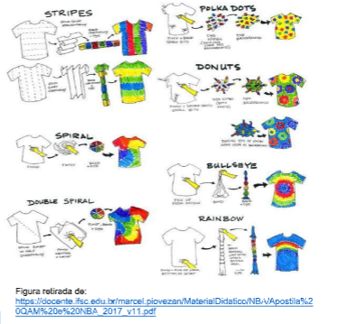
A interação pode produzir atração entre os átomos e com isso, um novo arranjo eletrônico energeticamente mais favorável é produzido. O tipo de interação que ocorre entre os átomos indica as ligações químicas que estão relacionadas com sua estrutura eletrônica e este é um processo que que possibilita o estado energético menor, ou seja, a maior estabilidade entre os átomos.
Ligações Iônicas são as que ocorre a transferência de elétrons. Uma ligação iônica envolve forças eletrostáticas que atraem íons de cargas opostas. Íons são átomos em desequilíbrio elétrico e apresentam carga positiva ou negativa. Os átomos são eletricamente neutros no estado fundamental, pois a quantidade de prótons no núcleo (partículas positivas de carga igual a +1) é igual ao número de elétrons presentes na eletrosfera (partículas negativas de carga igual a -1), sendo assim essas cargas se anulam. No caso dos íons a quantidade de elétrons na eletrosfera é diferente da quantidade de prótons disponíveis no núcleo. 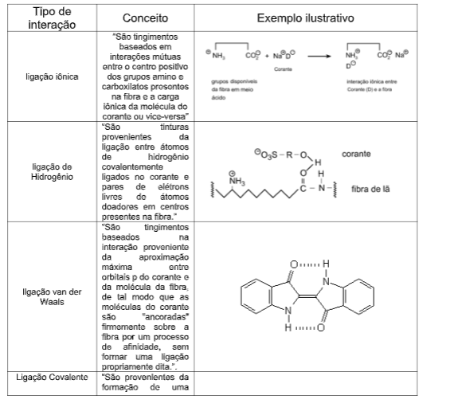
A ligação iônica geralmente ocorre entre um átomo ou agrupamento de átomos que tem tendência a ceder elétrons e um átomo ou agrupamento de átomos que tem tendência a receber elétrons. Os átomos que apresentam facilidade em perder elétrons, são em geral os metais das famílias IA, IIA e IIIA, e os que recebem elétrons são os ametais das famílias VA, VIA e VIIA. A imagem ao lado representa a formação de um íon, na sequência ou imagem que representa uma ligação Iônica. 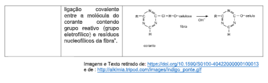
Os compostos resultantes da combinação entre íons são sempre neutros. Assim sendo, os íons positivos se combinam com íons negativos. Nesse caso, um íon de sódio (Na+) combina com um íon de cloro (Cl - ) e forma um composto neutro= NaCl (Cloreto de sódio, que é o sal de cozinha). Os compostos são representados pelas fórmulas. A fórmula nos diz quais os tipos de átomos e também a proporção deles. Por convenção, escreve-se em primeiro lugar o íon positivo. No caso dos O- combinarem com Na + , a fórmula será: Na 2 O.
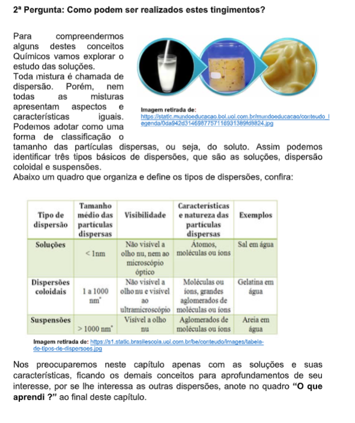 Ação e ReflexãoPara pesquisar: Usando a tabela periódica, indique os íons das famílias IA, IIA e IIIA e complete a tabela:
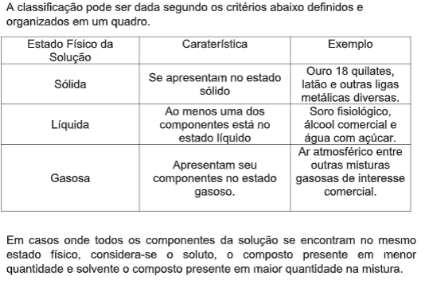Observe a tabela periódica e apresente uma fórmula molecular possível para os pares de elementos abaixo:
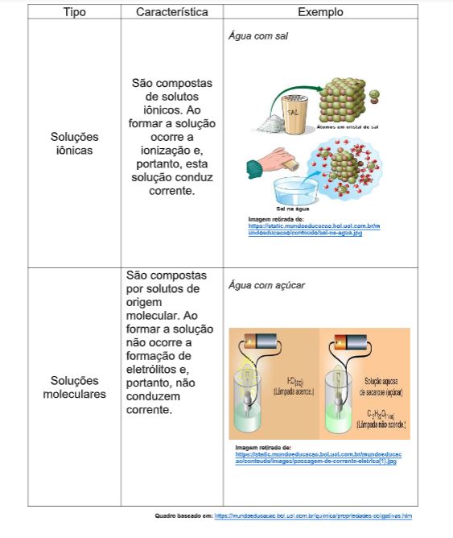SAIBA MAIS!
Os compostos que apresentam ligações entre seus íons: os cátions e os ânions se atraem fortemente. Assim, estas ligações são de natureza elétrica, e dão origem a retículos ou reticulados cristalinos – em nível microscópico, um cátion atrai vários ânions, e um ânion atrai vários cátions; formando, assim, aglomerados com formas geométricas bem definidas.
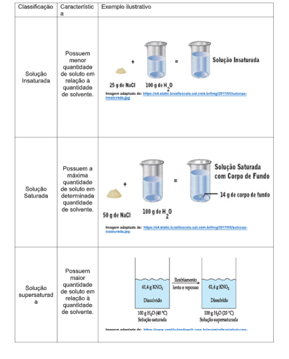Características dos compostos Iônicos:
• São constituídos por íons positivos e negativos dispostos de maneira regular formando um retículo.
• A ligação iônica é não-direcional (atração eletrostática estende-se igualmente em todas direções).
• Materiais muito duros. Alto ponto de fusão e ebulição (requer energia considerável para romper o retículo).
• Compostos iônicos conduzem corrente quando a substância se encontra fundida ou dissolvida. No estado sólido conduzem somente quando apresentam defeitos.
PRINCIPAIS AGENTES QUÍMICOS IDENTIFICADOS NA CONSTRUÇÃO CIVIL
Num canteiro de obras são muitas as atividades que geram poeira e, na maioria dessas atividades, os trabalhadores ficam expostos a estes agentes químicos sem os cuidados necessários, podendo sofrer todo tipo de consequência maléfica decorrente dessa exposição. Os diversos agentes químicos que podem poluir um local de trabalho e entrar em contato com o organismo dos trabalhadores podem apresentar uma ação localizada ou serem distribuídos para os diferentes órgãos e tecidos, levados pelos fluídos internos (sangue e outros), produzindo uma ação generalizada.
MEDIDAS DE CONTROLE
No controle das doenças ocupacionais provocadas pela inalação de ar contaminado com poeiras, o objetivo principal deve ser minimizar a contaminação do local de trabalho, ou ambiente de trabalho. Isso deve ser alcançado, tanto quanto possível, pelas medidas de controle coletivo, ou seja, relativas ao ambiente de trabalho. As medidas de controle da exposição aos aerodispersóides são divididas em medidas relativas ao ambiente de trabalho e medidas relativas ao trabalhador. 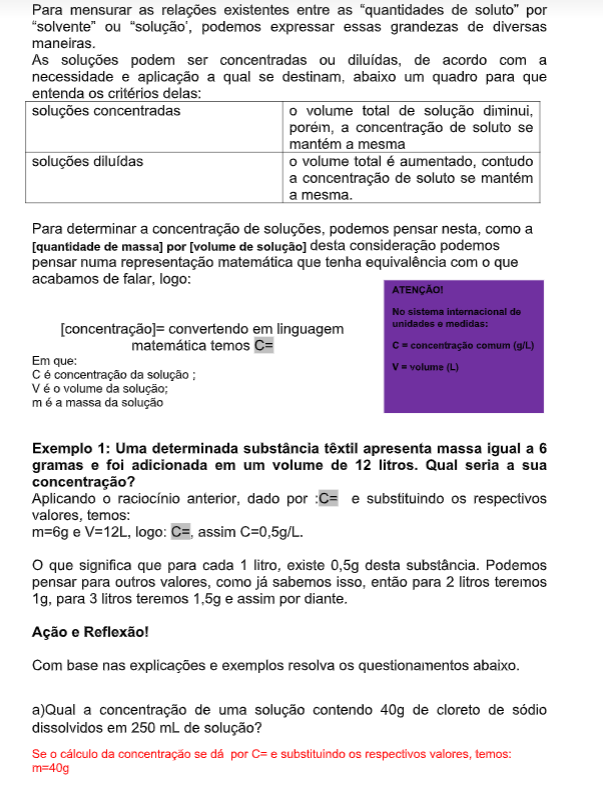
Entre as medidas relativas ao ambiente de trabalho:
- Colocação de barreira física entre a poeira e o trabalhador, fazendo um acoplamento das máquinas que produzem significativa quantidade de poeira, como as lixadeiras e a serra elétrica manual;
- Promoção de ventilação nos locais onde há presença de poeira e através de exaustores;
- Umidificação de locais cuja quantidade de poeira seja intensa dentro dos canteiros de obras;
As medidas relativas ao trabalhador:
- Uso de equipamentos de proteção individual (EPI), imprescindíveis em todas as atividades da construção civil. O trabalhador deve ficar atento quanto à manutenção do EPI e até mesmo quando da troca do mesmo.
- Os EPIS devem ser limpos diariamente e conservados em boas condições de uso para que possam ter eficácia. Equipamentos utilizados de forma indevida e mal conservados podem não dar a suposta proteção esperada.
- As refeições devem ser realizadas em áreas restritas e especialmente designadas para essa finalidade. Cuidados especiais como lavar as mãos, rosto e cabelos, antes de comer e após o trabalho, são medidas importantes sempre que houver a possibilidade de contaminação por poeira.
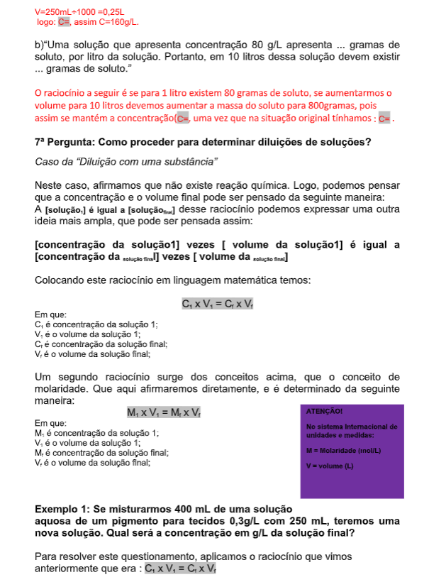